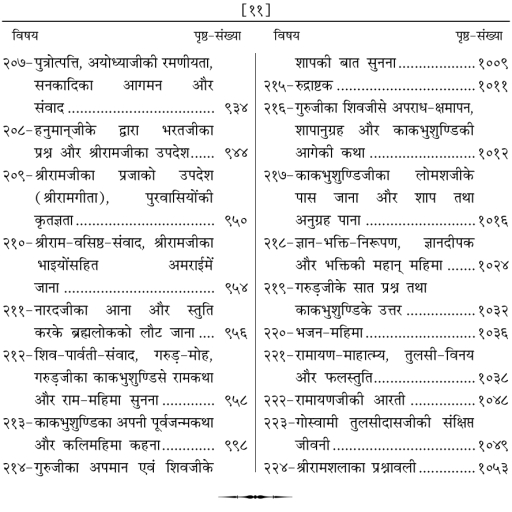
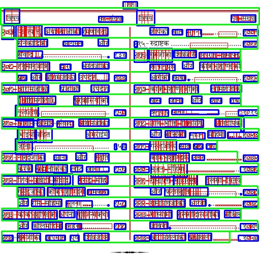
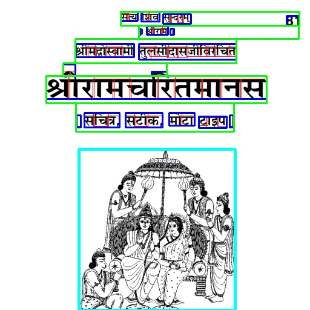

Given raw digital capture I \in \mathbb{R}^{H \times W \times 3}, determine optimal hierarchical decomposition \mathcal{T}:



| Method | CER (%) | WER (%) | Acc (%) |
|---|---|---|---|
| Tesseract 5 | 47.82 | 58.30 | 52.18 |
| Kraken HTR | 38.60 | 44.12 | 61.40 |
| LayoutLMv3 | 26.90 | 31.85 | 73.10 |
| Proposed (Ours) | 15.32 | 9.97 | 84.50 |
| Class | Precision | Recall | F1 |
|---|---|---|---|
| TextRegion | 0.942 | 0.961 | 0.951 |
| TextLine | 0.918 | 0.935 | 0.926 |
| GraphicRegion | 0.925 | 0.890 | 0.907 |
| Damage / Holes | 0.968 | 0.941 | 0.954 |
| Mean Layout | 0.937 | 0.928 | 0.932 |
Questions and Technical Discussion